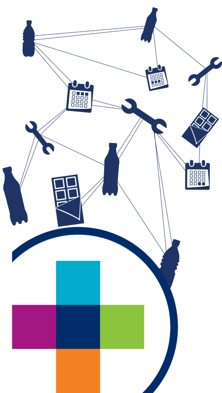
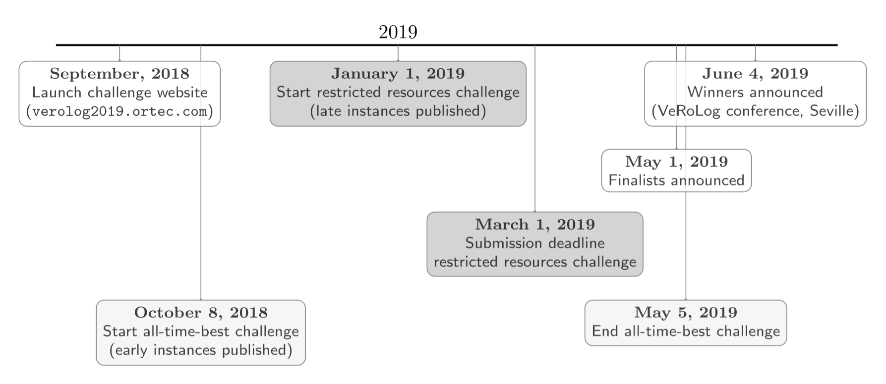
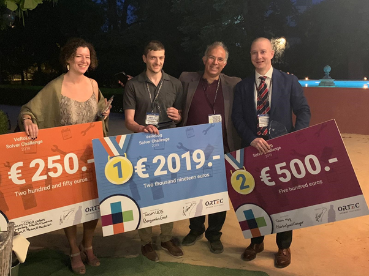

Welcome

The VeRoLog Solver Challenge 2019 revolves around an exciting routing problem which combines distribution and subsequent installation of equipment, such as vending machines. We challenge you to use your creativity, problem solving and programming skills to find the cheapest solution.
Please click here for detailed information about the challenge, including the problem description, official rules and awards. The timeline below shows the important dates.

Winners announcement
After running the solvers of all the finalists on the set of hidden instances, the final ranking of the finalists in the restricted resources challenge was determined. A CSV file of all scores per team, seed and instance can be found here. Based on these scores, the final ranking is as follows:
| Final rank | Team | Mean rank for hidden instances |
|---|---|---|
| 1 | UOS | 1.24 |
| 2 | mjg | 2 |
| 3 | COKA coders | 4.56 |
| 4 | orlab | 4.8 |
| 5 | TCS explorer | 5.32 |
| 6 | aavk | 5.88 |
| 7 | wanderer | 5.96 |
| 8 | justFall | 6.24 |
This means that the prize winners of this year's VeRoLog Solver Challenge are:
| 1st prize | Team UOS | Benjamin Graf | Osnabrück University, Germany |
| 2nd prize | Team mjg | Martin Josef Geiger | Helmut-Schmidt-University / University of the Federal Armed Forces Hamburg, Germany |
| 3rd prize | Team COKA coders | Caroline Jagtenberg, Andrea Raith, Michael Sundvick, Kevin Shen, Oliver Maclaren, and Andrew Mason | The University of Auckland, New Zealand |

Congratulations to all winners, and a huge thank you to all participants for making this VeRoLog Solver Challenge such an interesting and rewarding experience!
Finalists announcement
After having validated and processed all the submitted solvers, we are pleased to announce the finalists of the restricted resources challenge. The following teams -in alphabetic order- have reached the final:
| Team |
|---|
| aavk |
| COKA coders |
| justFall |
| mjg |
| orlab |
| TCS explorer |
| UOS |
| wanderer |
Special thanks
ORTEC and VeRoLog acknowledge the support of FICO, GUROBI and IBM for providing licenses of their solvers Xpress, GUROBI and CPLEX respectively! This allows ORTEC to make use of these solvers in the finals, and therefore your programs may call on any of these solvers.
May you require a personal license for the sake of developing your programs for the challenge, please note that these companies implement academic initiatives, see:
- FICO: https://community.fico.com/s/academic-programs
- GUROBI: http://www.gurobi.com/academia/academia-center
- IBM: http://ibm.biz/AI_CPLEX128
Those that participate in the challenge and want to use any of these solvers but are not eligible within the corresponding academic initiatives, may contact respectively:
- FICO: Timo Berthold (TimoBerthold@fico.com)
- GUROBI: Frédéric Baumann (baumann@gurobi.com)
- IBM: Sofiane Oussedik (soussedik@fr.ibm.com)
History
The VeRoLog Solver Challenge (VSC) is aimed at promoting the development of effective algorithms for real-world applications in Vehicle Routing. The problem subject of the challenge is selected by VeRoLog in collaboration with a company. PTV organized the first and second editions of the VSC in 2014 and 2015, respectively. The third edition, held in 2017, was organized by ORTEC; see https://verolog2017.ortec.com/ for more information.